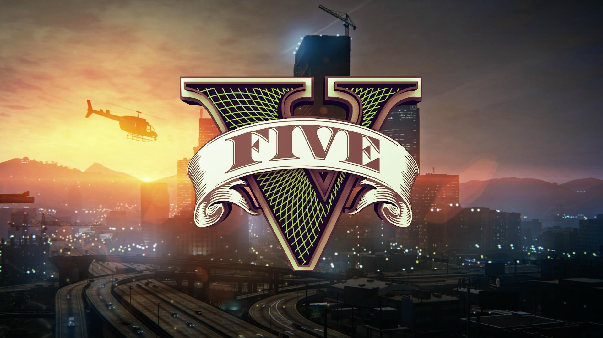

1. Super Mario Galaxy 2 (Wii, 2010) — 97 баллов трёхмерный платформер из серии Mario, разработанный компанией Nintendo для консоли Wii, сиквел Super Mario Galaxy. Игра была выпущена 23 мая 2010 года в Северной Америке, 27 мая 2010 — в Японии и 11 июня 2010 — в Европе. Принцесса Пич приглашает Марио на Звёздный фестиваль, обещая угостить его пирогом домашнего приготовления. По пути во дворец принцессы он встречает Луму — похожее на звезду существо, которое наделяет его возможностью вертеться. Неожиданно Марио видит своего заклятого врага — короля Купу. Тот достиг огромного размера и, напав на Грибное королевство, как водится, похищает Принцессу Пич. После этого злодей отправляется в космос, чтобы создать там собственную империю. Марио пускается в погоню и в космосе встречает Луббу, называющего себя главным Лумой, который предоставляет ему в распоряжение космический корабль, работающий на энергии звёзд. На нём Марио начинает своё путешествие с целью спасти принцессу, а также помочь Луббе найти потерянных Лум. Metacritic
2. The Legend of Zelda: Breath of the Wild (Switch, 2017) — 97 баллов. Компьютерная игра в жанре action-adventure с открытым миром, разработанная и выпущенная японской компанией Nintendo для консолей Nintendo Switch и Wii U в 2017 году. Это девятнадцатая игра в серии The Legend of Zelda; её действие происходит в той же вымышленной стране Хайрул, что и в предыдущих играх серии, но долгое время спустя. Главный герой игры, Линк, пробуждается после столетнего сна; он должен бросить вызов Бедствию Ганону — злому существу, которое не раз угрожало Хайрулу на протяжении тысячелетий. В далёком прошлом многие расы Хайрула жили вместе в гармонии, синяя аура Шиика обеспечивала жизнь земле, и все извлекали выгоду из передовых технологий Шиика. Но всему пришёл конец, когда появилось чудовище, более известное как Бедствие Ганон. 10 000 лет спустя, вернувшись в средневековое государство, королевство Хайрул заново открыло древнюю технологию, оставленную их предками, посредством раскопок. Прочитав пророчества, которые оставили их предки, они узнали, что Бедствие Ганон вернётся, и что Хайрулу потребуются механические стражи и Чудища в виде животных: слон Ва-Рута, ящер Ва-Рудания, птица Ва-Медо и верблюд Ва-Наборис чтобы остановить его. Ключевыми участниками сражений Хайрула стали принцесса народа зора Ми́фа, гóрон-силач Да́рук, лучший лучник народа pито Рева́ли и предводительницa герудо Урбóза, которые в итоге были избраны пилотами Чудищ. Герой, Принцесса и Воины пытались остановить зло, но в итоге потерпели неудачу. Бедствие Ганон погубил Воинов, короля Хайрула и всех жителей Центрального Хайрула. Герой и Принцесса убегают и спасаются. Однако, Герой проигрывает бой со стражами, во время которого его смертельно ранят. В последний момент Принцессa обретает священную силу и спасает Героя, после чего он падает и начинает умирать. Героя погрузили в Святилище Жизни восстанавливаться, Принцесса прячет его меч в Затерянных Лесах и с помощью священной силы в одиночку бросает вызов Ганону и заточает его в ловушку. В настоящем, 100 лет спустя, потерявший память Линк пробуждается от глубокого сна, услышав таинственный женский голос, который ведёт его к ныне разрушенному королевству Хайрул. Он встречает мудреца, который оказался призраком короля Рóама и узнаёт что произошло сто лет назад. Роам просит Линка спасти Хайрул пока ещё не поздно. Линк соглашается и отправляется в деревню Какарико (англ. Kakariko Village) к старейшине народа Шиика Импе, которая поручает ему вернуть Чудищ обратно на сторону Хайрула и забрать Высший Меч (англ. Master Sword) из Затерянных Лесов. С помощью потомков Воинов принца Сидóна, горона Юнóбо, воина деревни pито Тэбы и юной предводительницы герудо Ри́джу он усмиряет Чудищ и спасает души погибших Воинов. В благодарность, они дарят ему свои силы: Милость Мифы которая не даст Линку погибнуть, Оплот Дарука который защитит Линка от чего угодно, Вихрь Ревали с помощью которого можно высоко взлететь и Ярость Урбозы которая бьёт по определённой области врагов током. Постепенно, Линк вспоминает всё, что связывало его с Зельдой и становится сильнее. После того как он всё вспомнил, нашёл Высший Меч и усмирил всех Чудищ, Линк идёт в руины замка Хайрул, уничтожает Ганона и освобождает Зельду. Она благодарит его и они вместе идут восстанавливать Хайрул, а с неба на них смотрят души Роама, Мифы, Ревали, Урбозы и Дарука. Metacritic
3. Red Dead Redemption 2 (PlayStation 4, 2018) — 97 баллов. Компьютерная игра в жанрах action-adventure и шутера от третьего лица с открытым миром, разработанная Rockstar Studios[комм. 1] и выпущенная Rockstar Games для консолей PlayStation 4 и Xbox One 26 октября 2018 года и для персональных компьютеров под управлением Windows 5 ноября 2019 года. Является третьей игрой в серии Red Dead и приквелом к Red Dead Redemption 2010 года.Персонажи Основная статья: Список персонажей Red Dead Redemption 2 Главным героем игры является член банды Датча Ван дер Линде по имени Артур Морган. Помимо Артура в банду Датча входят ещё около 20 человек, включая некоторых персонажей предыдущей игры серии, Red Dead Redemption. В эпилоге главным героем является Джон Марстон, протагонист Red Dead Redemption. Банде «Ван дер Линде» противостоят нанятые магнатом Левитом Корнуоллом агенты детективного агентства Пинкертона во главе с Эндрю Милтоном, а также бандиты из конкурирующей банды Кольма О’Дрисколла. История События игры начинаются в 1899 году, когда после неудачного ограбления парома в Блэкуотере банда Датча Ван Дер Линде вынуждена скрываться от преследования законников, оставив все свои деньги в Блэкуотере. Считая, что время беззакония подходит к концу, банда решает заработать достаточное количество денег, чтобы уйти на покой. Они грабят поезд, принадлежащий магнату Левиту Корнуоллу; в ответ на это Корнуолл нанимает агентов Пинкертона во главе с Эндрю Милтоном, чтобы поймать их. После перестрелки с людьми Корнуолла в Валентайне, банда Датча покидает Нью-Ганновер и переезжает в штат Лемойн, находившийся рядом. Там они встречают две враждующие между собой семьи Греев и Брейтуэйтов. Датч пытается стравить семьи друг с другом, но Греи, узнав об этом, устраивают засаду, в которой погибает член банды Шон Макгуайр, а Брейтуэйты похищают сына Джона Марстона, Джека. Банда принимает ответные меры против обеих семей и узнаёт, что Джек находится у главы преступного мира Сен-Дени — Анджело Бронте. Вернув мальчика, банда по наводке Бронте грабит трамвайную станцию, но попадают в ловушку. Сбежав от преследования, Датч решает отомстить и в конечном итоге скармливает Бронте аллигатору. Ван дер Линде понимает, что у банды нет будущего в США и решает ограбить крупный банк в Сен-Дени, чтобы на полученные деньги уехать в Австралию или на Таити. Однако во время ограбления банду окружают Пинкертоны. Агент Милтон убивает Хозию и арестовывает Джона, а также в ходе боя погибает Ленни. Датч, Артур, Билл, Хавьер и Мика сбегают из города на корабле, направляющемся на Кубу. Корабль попадает в шторм и тонет, а людей выбрасывает на берег острова Гуарма, где они оказываются втянутыми в войну между владельцами плантаций сахарного тростника и местным населением, обращённым в рабство. Группа Датча помогает в борьбе против владельцев плантаций и обеспечивает себе транспорт обратно в США. Вернувшись, банда вновь воссоединяется, однако их сразу же находят агенты Пинкертона, и после ожесточённой перестрелки принимается решение вновь сменить местоположение лагеря. Эбигейл просит Датча вызволить Джона из тюрьмы, но тот ей отказывает. Тогда Артур и Сэди решают сделать это вдвоём. Через некоторое время Артур узнаёт, что он болен туберкулёзом, заразившись им от фермера Томаса Даунса, у которого выбивал долги по просьбе Леопольда Штрауса. Датч начинает сомневаться в лояльности Артура после того, как он и Сэди вытащили из тюрьмы Джона, ослушавшись приказа, а также отчасти благодаря манипуляциям Мики, который охотно взял на себя роль Хозии в качестве правой руки Датча. Банда начинает распадаться. Ван дер Линде использует конфликт между местным племенем индейцев и армией Соединённых Штатов с целью отвлечь внимание от своей банды, что приводит к полному разочарованию Артура в Датче. В ходе сюжета выясняется, что именно Мика был предателем, из-за которого случился провал банды в ограблении банка Сен-Дени. В зависимости от чести главного героя, Артур Морган либо мирно умрёт из-за болезни и ранений непосредственно сразу после последнего сражения, либо будет убит. Спустя восемь лет, в 1907 году, Джон со своей семьёй, возлюбленной Эбигейл и сыном Джеком, с переменным успехом ищут работу и пытаются вести жизнь «по закону». Изначально Джон ищет работу на ранчо Пронгхорнов, там он работает фермером и, вопреки просьбам Эбигейл не нарушать закон и жить мирно, помогает владельцу защищаться от банды Ларами, которые хотят отнять у Пронгхорнов участок. Позже из-за этого его возлюбленная, забрав Джека, уходит от Джона. Марстон вспоминает, что Эбигейл хочет купить участок Бичерс-Хоуп около Блэкуотэра. Он берёт кредит в банке и покупает участок. Около банка Джон встречает Дядюшку, с которым он едет в Сен-Дени и вместе с ним строит ранчо. В это время он получает телеграмму от Сэди Адлер о работе охотником за головами. Марстон соглашается и работает с ней некоторое время. После всего этого Эбигейл возвращается к Джону, после чего тот делает ей предложение. Некоторое время спустя на Бичерс-Хоуп приезжает Сэди и сообщает, что она знает, где может находится Мика с его новой бандой, и, вероятно, деньги из ограбления Блэкуотера находятся вместе с ним. Несмотря на мольбы Эбигейл остаться, Джон просит её понять, что всего, что они имеют, не было бы, если бы не Артур и другие члены банды, убитые из-за предательства Мики, посему они должны быть отмщены. Они выслеживают Мику, обнаруживая вместе с ним и Датча. Однако в итоге последний стреляет в Мику и позволяет Джону добить его, после чего молча уходит, оставляя в хижине сундук набитый золотом и деньгами из Блэкуотера. Позже Джон официально женится на Эбигейл и начинает новую жизнь на своём ранчо. Во время финальных титров показывается дальнейшая судьба части главных и второстепенных персонажей. Metacritic

4. Grand Theft Auto V (PlayStation 4, 2014) — 97 баллов. Мультиплатформенная компьютерная игра в жанре action-adventure с открытым миром, разработанная компанией Rockstar North и изданная компанией Rockstar Games. Изначально игра была выпущена для игровых консолей PlayStation 3 и Xbox 360 в 2013 году, в 2014 году переиздана для PlayStation 4 и Xbox One, а в 2015 году — для персональных компьютеров под управлением Windows. Является пятнадцатой по счёту игрой серии Grand Theft Auto и следующей крупной игрой после Grand Theft Auto IV, выпущенной в 2008 году[8]. В России и СНГ издателем Grand Theft Auto V выступает компания 1С-СофтКлаб. 2004 год, Людендорф, Северный Янктон. Профессиональные грабители и лучшие друзья — Майкл Таунли, Тревор Филипс и Брэд Снайдер совершают налёт на местный банк. Ограбление удаётся, но при отходе машина попадает в аварию, и героям приходится убегать пешком. Брэда и Майкла подстреливает агент ФРБ (игровая пародия на ФБР) — Дейв Нортон. Тревору удаётся сбежать. Но, как выясняется позже, смерть Майкла была инсценирована: он до ограбления вступил в сделку с агентом ФРБ и начал с ним сотрудничество, и, ради спасения себя и своей семьи, завёл друзей в засаду. Он получает от ФРБ дорогой особняк, деньги и, чтобы выживший Тревор его не нашёл, Майкл меняет свою фамилию «Таунли» на «де Санта». Действие игры переносится в 2013 год, в Лос-Сантос, штат Сан-Андреас. Майкл имеет напряжённые отношения с семьёй: его жена Аманда постоянно тратит его деньги и изменяет ему, сын Джимми помешан на видеоиграх и наркотиках, а дочь Трейси пытается попасть в телевидение, в частности в порно-индустрию. Майкл ходит на сеансы к психотерапевту Исайе Фридлендеру, который, по его мнению, ему совсем не помогает. На улице к Майклу обращаются двое афроамериканцев — Франклин Клинтон и его друг Ламар Дэвис — и спрашивают адрес одного дома. Они угоняют у владельца этого дома два спорткара для работодателя Франклина Симона Етаряна — хозяина автомобильного салона. В салоне Симон продаёт в кредит внедорожник сыну Майкла Джимми. Но вскоре Симон поручает Франклину выкрасть машину из дома Майкла «за просрочку». Франклин пробирается в дом и угоняет машину. Но на заднем сиденье оказывается Майкл, который приставляет пистолет к голове Франклина и заставляет въехать в окно автосалона Етаряна. Майкл избивает Симона за мошенничество, Франклин теряет работу. Франклин предлагает свои услуги Майклу. Сына Майкла, Джимми, похищают некие бандиты вместе с яхтой Майкла, которую Джимми пытался им продать. Майкл с Франклином спасают Джимми, но яхту упускают. Майкл, застукав Аманду в постели с её тренером по теннису, гонится за ним вместе с Франклином до его дома и, привязав опоры дома к своему пикапу, обрушивает его на землю. Но выясняется, что это был дом подруги главаря мексиканской мафии в Лос-Сантосе, Мартина Мадрасо. Майкл должен за ремонт два с половиной миллиона долларов, и ему приходится вернуться к ограблениям. Он находит своего старого друга, Лестера Креста. Франклин также помогает своему другу Ламару, который связан с группировкой Chamberlain Gangster Families, которой противостоит банда Ballas. Из тюрьмы возвращается один из почётных членов Families, Гарольд «Стретч» Джозеф, с которым Франклин имеет напряжённые отношения. Также Ламар отдаёт Франклину на попечение своего пса Чопа. Майкл и Лестер подготавливают ограбление ювелирного магазина «Vangelico». Вместе с Франклином и другими членами банды Майкл совершает налёт на магазин и выносит около пяти миллионов долларов. Он расплачивается с Мартином, и вместе с Франклином решает залечь на дно. Но во время ограбления Майкл выдаёт себя своей фразой, которую сказал в Людендорфе в 2004-м: «Каждый день ты забываешь тысячу мелочей. Пусть это будет одна из них». И его по этой фразе узнаёт Тревор Филипс, который в это время, занимаясь сексом с наркоманкой-байкершей Эшли Батлер, смотрел репортаж новостей об ограблении. Тревор живёт в Сэнди-Шорс, небольшом городке в Округе Блэйн. Он имеет собственную наркокомпанию «Тревор Филипс Индастриз». Но на его пути встают байкеры «Пропащие», которые, после развала клуба в Либерти-Сити, перебрались в Округ Блэйн. Ситуация достигает своего апогея, когда Тревор в порыве ярости убивает их президента, Джонни Клебица, решившего разобраться с Тревором из-за чувств к Эшли. Также бизнесу Тревора мешает латиноамериканская группировка Varrios Los Aztecas, которая нападает на его наркофабрику. Тревор отражает нападение и убивает главаря банды — Ортегу. С Тревором начинает работать Тао Чен, сын Вэя Чена, главаря триады в Сан-Андреасе. Но его переманивают в свой бизнес конкуренты Тревора, братья О’Нил. Тревор уничтожает их дом. Оставшиеся в живых О’Нилы и Вэй Чен жаждут мести (последний же, отец Тао желает этого из-за того, что они потеряли покупателя из-за Филипса). С помощью своего друга Уэйда Тревор находит Майкла в Лос-Сантосе. Друзья воссоединяются, но имеют напряжённые отношения — Тревор считает Майкла предателем, инсценировавшим смерть и скрывшимся с деньгами. Майкл встречается с Дейвом Нортоном и его коллегой Стивом Хейнсом и, по их поручению, с Тревором и Франклином спасает нужного ФРБ человека Фердинанда Керимова из здания ЦУР (игровая пародия на ЦРУ). Затем, под руководством Тревора, герои крадут секретное оружие у военной охранной организации Merryweather, которое, однако, приходится вернуть. Майкл ссорится с семьёй, и Аманда с детьми уезжают. Майкл, Тревор и Франклин по поручению ФРБ грабят инкассаторский фургон с деньгами, и Майкл знакомится с Дэвином Уэстоном, богатым бизнесменом, который поручает героям украсть для него несколько редких машин. Уэстон представляет Майкла Соломону Ричардсу, знаменитому кинорежиссёру, который предлагает де Санте быть продюсером его нового фильма. Майклу звонит Мартин Мадрасо, и предлагает ему работу. Вместе с Тревором он взрывает реактивный самолёт и крадёт из него ценные бумаги для Мадрасо. Но Мартин отказывается платить, и Тревор в злости похищает его жену Патрицию, с которой у него впоследствии возникают романтические отношения. Майклу и Тревору приходится на время покинуть город, и они поселяются в трейлере Филипса в Сэнди-Шорс. Тревор со своим другом Роном угоняет самолёт Merryweather с оружием, но его подбивают истребители. Вместе с Майклом и Франклином Тревор убивает оставшихся в живых братьев О’Нил. Затем они совершают налёт на банк в Палето-Бэй, но большая часть вырученного отдаётся ФРБ. Для расплаты с Мадрасо Майкл и Тревор грабят поезд Merryweather. Наконец, вместе с Дейвом Нортоном и Стивом Хейнсом, они крадут нейротоксин из военной лаборатории. Тревор возвращает жену Мартину, Майкл возвращается в город. Герои готовятся к главному ограблению в игре — ограблению Федерального хранилища. Тревор внезапно задаётся вопросом, кто находится в могиле Майкла Таунли вместо него. Тревор решает добраться до Людендорфа, чтобы все узнать. Майкл в погоне за ним также летит в Янктон. Тревор раскапывает могилу и находит в ней тело Брэда. Внезапно появляются бандиты Вэя Чена. Тревор сбегает, Майкл же попадает в плен к китайцам. Франклин тем временем доставляет все машины Уэстону, но Дэвин отказывается платить. С помощью Лестера Франклин находит Майкла и спасает его. Майкл возвращается на киностудию. Дэвин Уэстон пытается завладеть новым фильмом Ричардса, но Майкл останавливает его. С помощью доктора Фридлендера, Майкл воссоединяется с семьёй. Вместе с Франклином Майкл для совершает налёт на здание FIB и крадёт ценные файлы для Нортона и Хейнса. Нортон назначает встречу Майклу, которая оказывается засадой агентов FIB, IAA и Merryweather, организованной Стивом Хейнсом. С помощью внезапно появившегося Тревора, Майкл и Дейв спасаются. Тем временем Друг Франклина, Ламар, попадает в плен к Ballas на лесопилке в Палето-Бэй. С помощью Майкла и Тревора Франклин спасает Ламара. Как выясняется, за этим стоял Стретч, предавший банду и переметнувшийся к Ballas. Стив Хейнс и Дейв Нортон поручают Франклину убить Тревора, который является большой проблемой для них. Майкл и Джимми направляются на премьеру фильма Соломона Ричардса «Катастрофа», продюсером которого является Майкл. Но на особняк Майкла нападают агенты Merryweather, нанятые Дэвином Уэстоном. Майкл убивает всех агентов и спасает семью. Герои совершают налёт на Федеральное хранилище, и выносят слитки золота суммой в 200 миллионов долларов. К Франклину же приходит Дэвин Уэстон и поручает убить Майкла. После чего перед игроком стоит выбор: либо убить Тревора, либо убить Майкла, либо спасти обоих. Это вторая игра серии GTA (после GTA IV), которая предусматривает не одно окончание сюжета. Концовка 1: Убить Тревора (Something Sensible). Франклин решает убить Тревора по приказу ФРБ. Майкл неохотно соглашается помочь. Франклин назначает Филипсу встречу на окраине города. Узнав о намерениях Клинтона, Тревор пытается сбежать, Франклин пытается догнать его. Погоню прерывает Майкл, который сбивает пикап Тревора, и тот врезается в цистерну с бензином. Бензин разливается, и раненый Тревор вываливается из машины. Франклин стреляет в него или в бензин (если Франклин долго не будет стрелять, то это сделает Майкл), и Тревор сгорает заживо. Майкл и Франклин сохраняют дружеские отношения, но опции гулять друг с другом больше нет. Концовка 2: Убить Майкла (The Time’s Come). Франклин решает убить Майкла по приказу Дэвина Уэстона. Франклин обращается за помощью к Тревору, но он отказывается помочь. Франклин назначает Майклу встречу на окраине города. Узнав о намерениях Клинтона, Майкл пытается сбежать, Франклин пытается догнать его. Майкл пытается сбежать на строительных лесах сельской электростанции, но Франклин догоняет его и скидывает с вышки (есть опция спасти Майкла, но он сам отпустит руку и упадёт). Тревор и Франклин разрывают отношения. Концовка 3: Спасти обоих (The Third Way). Франклин обращается к Лестеру за помощью. Тот предлагает заманить агентов ФРБ и Merryweather в литейную на окраине города, где якобы будет переплавляться золото, украденное из Федерального хранилища. Франклин также зовёт на помощь Ламара. Герои собираются в литейной и расправляются со всеми прибывшими агентами. После бойни они решают покончить со всеми своими врагами: Дэвином Уэстоном, Стивом Хейнсом, Вэем Ченом и Стретчем; Лестер находит их местоположение. Майкл убивает Стретча, Франклин убивает Вэя Чена, Тревор убивает Стива Хейнса и похищает Дэвина Уэстона из его особняка за городом, попутно расправившись с агентами Merryweather, охраняющими особняк. Тревор отвозит Дэвина к обрыву неподалёку от Палето-Бэй, после чего герои сталкивают машину с Уэстоном в воду, и она взрывается. Герои решают остаться друзьями, хотя Тревор так и не прощает Майклу его поступок. . Metacritic
5. Super Mario Odyssey (Switch, 2017) — 97 баллов.Видеоигра из серии игр «Марио», разработанная Nintendo EPD для приставки Nintendo Switch. Odyssey представляет собой трёхмерный платформер и её игровой процесс скорее больше приближен к Super Mario 64 и Super Mario Sunshine, позволяя свободно исследовать открытые игровые миры. Игрок управляет персонажем по имени Марио, который должен спасти украденную злодеем Боузером принцессу Пич. Для этого герой объединяется с призраком по имени Кэппи и путешествует по всему миру по следам злодеяПерейти к разделу «#Сюжет». Игрок должен исследовать каждое царство, проходить препятствия, решать головоломки и сражаться с боссами. Odyssey предлагает возможность временно устанавливать контроль над не игровыми персонажами, в том числе и враждебными, получая доступ к их уникальным способностямПерейти к разделу «#Игровой процесс». Игра начинается с сюжетной завязки, типичной для других игр серии Mario[10]. Злодей Боузер (англ. Bowser) похищает принцессу Пич (англ. Princess Peach), но на этот раз с конкретной целью – жениться на ней[11]. В самом начале Марио (англ. Mario) терпит поражение от Боузера и теряет свою красную шляпу. Вскоре герой встречает призрака-шляпу по имени Кэппи (англ. Cappy), который предлагает свою помощь[12]. Его сестру Тиару (англ. Tiara) также похитил Боузер, которую хочет использовать в качестве короны для Пич[11] и призрак предлагает объединиться, чтобы найти и победить Боузера[13]. Герои начинают путешествовать по всему миру, по пятам Злодея[10] на летающем корабле-шляпе «Одиссея»[12], они понимают, что Боузер разорял местные царства[10] и воровал их самые ценные предметы для подготовки своей свадьбы[11], например свадебное платье из Озёрного царства или торт из Снежного царства[12]. По мере того, как герой стремится догнать Боузера, на его пути встаёт банда зайцев Брудли (англ. Broodals). Марио должен сразиться с каждым из них[12] и восстановить порядок в царствах[12]. В конечном итоге Марио добирается до конечной цели — на луну, чтобы сорвать свадебную церемонию Боузера и принцессы Пич. Он одолевает злодея в финальной битве, вызволяет Пич из разрушающегося подземелья, овладев телом Боузера[12][комм. 1]. После этого Марио пользуется моментом, чтобы сделать предложение руки и сердца принцессе Пич, но одновременно это пытается сделать и Боузер. Они начинают пихать цветы в лицо Пич и обиженная принцесса отвергает предложение обоих, намереваясь на «Одиссее» вернуться на Землю. Марио отправляется с ней, а Боузер остаётся на луне[12][14]. Metacritic